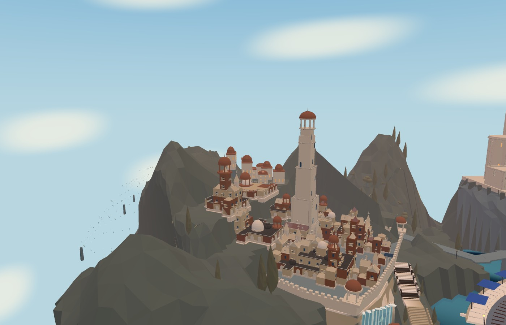
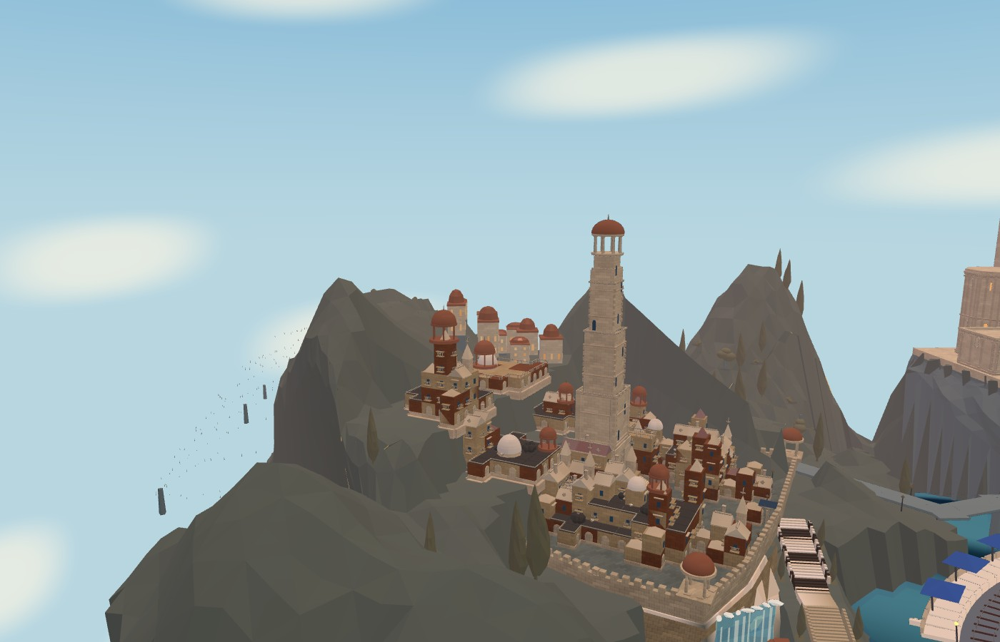
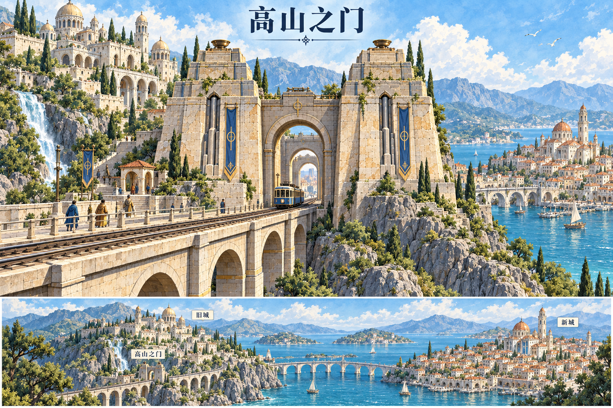
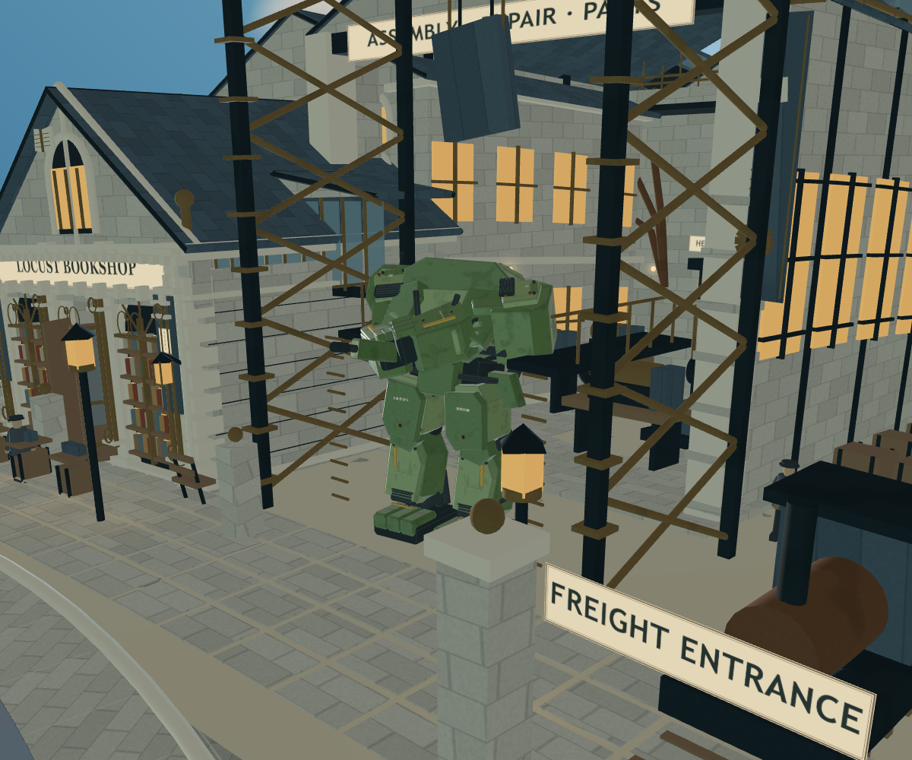
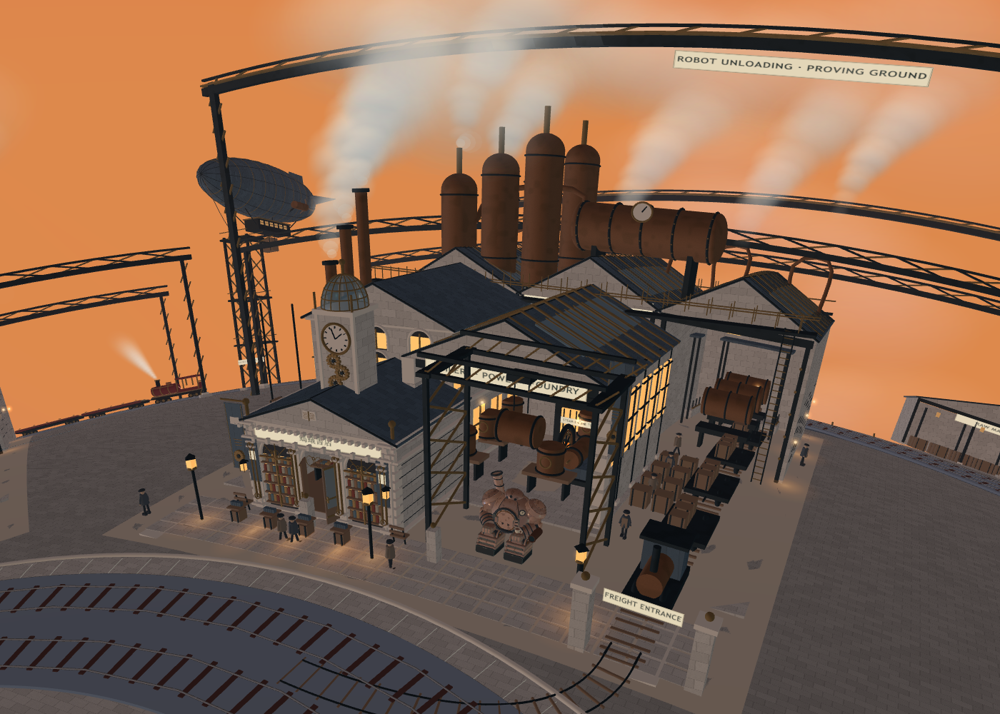

高山圣城 · 旧石材与建筑层次
旧城、新城、高山之门的 50 项累计构建步骤。每一步对应实际运行时改动与三处实景截图；这不是 50 次重新生成整座城市，也不是目标图最终美术验收。
重点：压低石墙自发光、错缝砌块、矿物斑驳与雨痕、修补色差、墙脚潮湿、石质线脚和壁柱、局部边角磨损。第 39 步恢复门区常绿植物与岩石材质，避免合批后被当作石墙处理。

修改前 · 相同机位
当前版本镜头与时间固定；鸟群、运输载具等动态对象仍在运行，截图不是逐像素静态比对。全景对照暂时隐藏山脊流雾以便看清石面，默认游戏保留流雾。
进入实际游戏 · 关闭本批修改作对照 · 修改与限制 · 几何与通路检查 · 逐步记录
沿用的目标图


本批同时修复的书店镇问题
实录分层战斗音效试听 · 实际听距测试

蝗虫枪口随目标瞄准，保留移动与运输姿态
书店橱窗、厂房与街灯的暖光仍有差距：房屋与山体保持现有低多边形轮廓，目标图中的密集宫城、雕刻与自然植被尚未完全复现。新增材质与线脚已接回 Web，未宣称 Blender / Godot 同步完成。